JAVA项目实战《苍穹外卖》
前言
你好：
首先感谢你使用这份笔记手册，本学习笔记是我在自学过程（网课视频在下方链接）中的随手笔记，可能出现遗漏，顺序错误或语法，单词等错误，你可以在自己的学习过程中对这份笔记更正即可。
说明： 本笔记为本人学习过程中随手写的笔记，为复习使用，笔记中可能存在遗漏或错误，具体请以官方文档和权威书籍为准！谢谢！ 笔记中的一些图片等元素因路径配置问题，可能会发生丢失。 笔记中展示的知识点仅为部分内容，完整内容请查阅官方开发文档内容！
参考资料
【黑马程序员Java项目实战《苍穹外卖》，最适合新手的SpringBoot+SSM的企业级Java项目实战】 https://www.bilibili.com/video/BV1TP411v7v6/?p=3&share_source=copy_web&vd_source=ea0cf64e8dac6f0193a7e28187a0fccb
项目开发整体介绍
软件开发流程
需求分析（查看需求规格说明书，产品原型） ↓ 设计（UI设计，数据库设计，接口设计） ↓ 编码（项目代码，单元测试） ↓ 测试（测试用例，测试报告） ↓ 上线运维（软件环境安装，配置）
开发分工
项目经理：对整个项目负责，任务分配、把控进度 产品经理：进行需求调研，输出需求调研文档、产品原型等 UI设计师：根据产品原型输出界面效果图 架构师：项目整体架构设计、技术选型等 开发工程师：代码实现 测试工程师：编写测试用例，输出测试报告 运维工程师：软件环境搭建、项目上线
软件环境
开发环境(development)：开发人员在开发阶段使用的环境，一般外部用户无法访问
测试环境（testing)：专门给测试人员使用的环境，用于测试项目，一般外部用户无法访问
生产环境(production)：即线上环境，正式提供对外服务的环境
苍穹外卖项目介绍
项目介绍
产品定位 专门为餐饮企业（餐厅、饭店）定制的一款软件产品
功能架构
体现项目中的业务功能模块
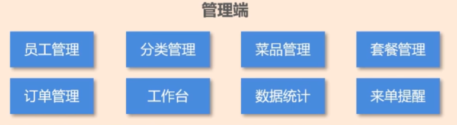
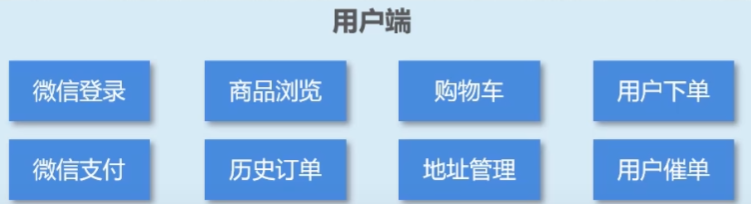
产品原型
用于展示项目的业务功能，一般由产品经理进行设计
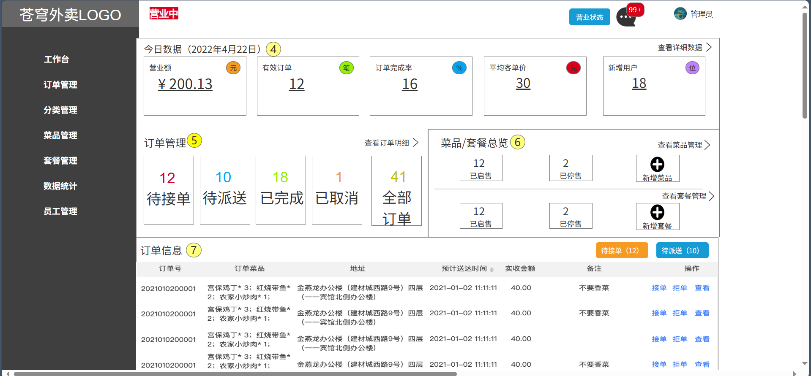
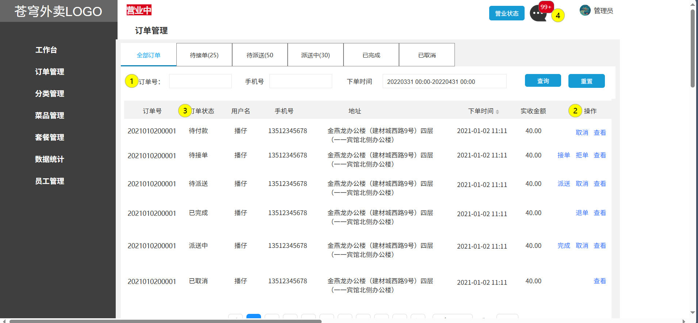
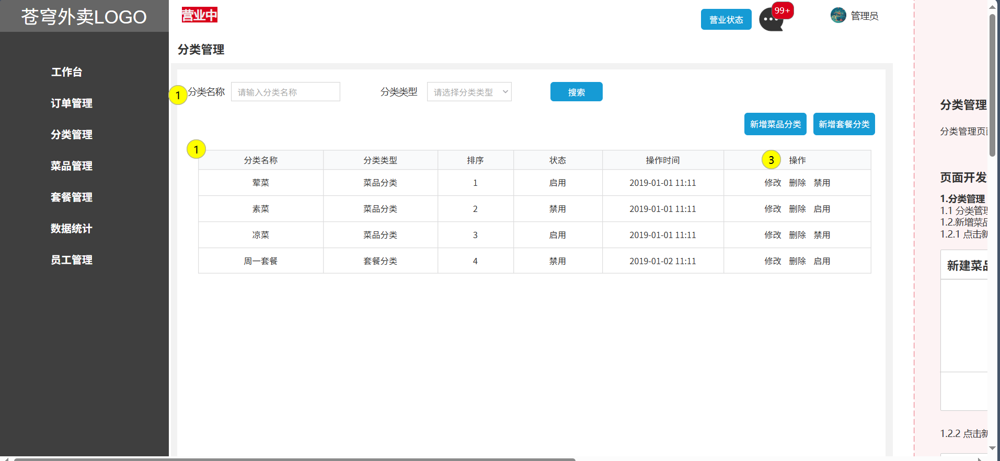
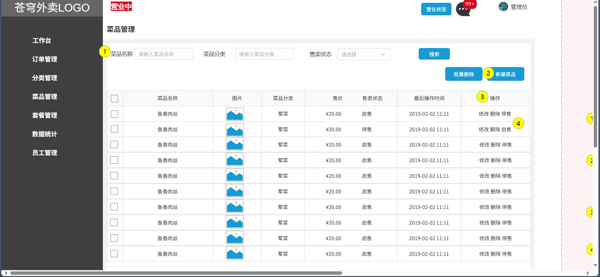
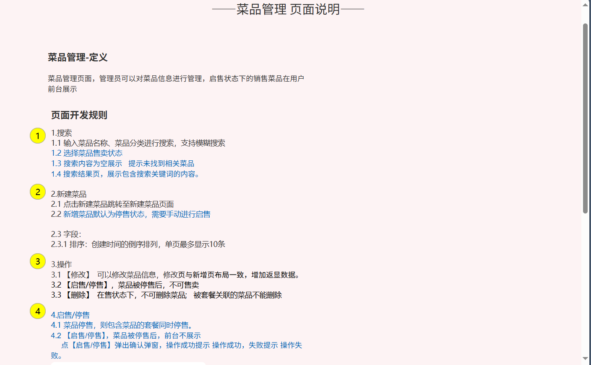
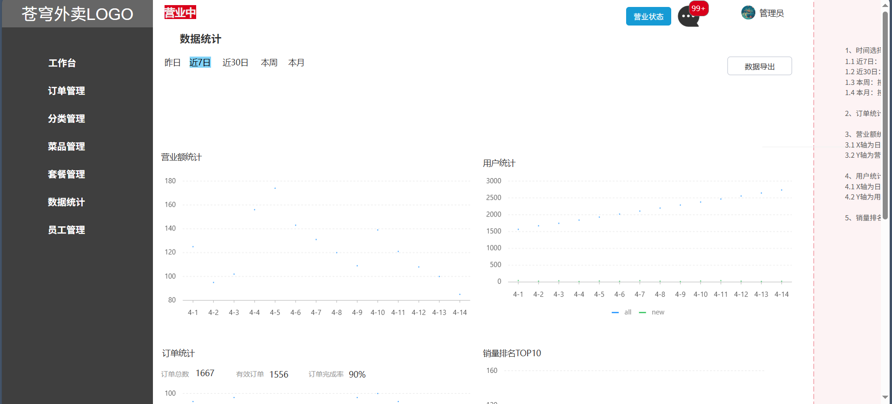
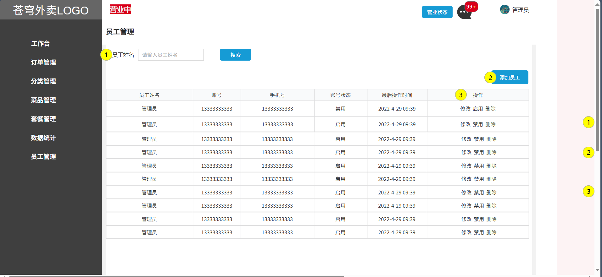
更多页面原型，需要下载课程资料。
技术选型
展示项目中使用到的技术框架和中间件等
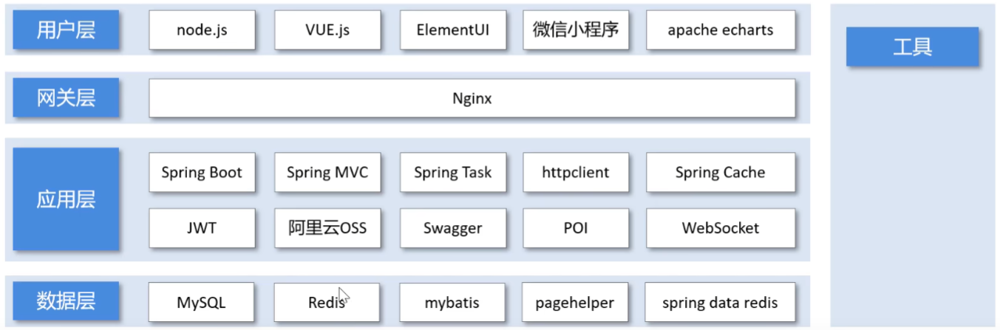
开发环境搭建
前端环境搭建（管理端）
启动资料中提供的Nginx服务器
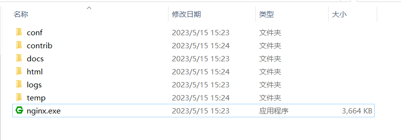
后端环境搭建
使用IDEA打开资料中提供的初始工程，并了解该项目的整体结构。
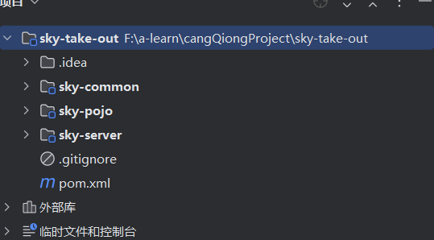
项目结构介绍
| 序号 | 名称 | 说明 |
|---|---|---|
| 1 | sky-take-out | maven父工程，统一管理依赖版本，聚合其他子模块 |
| 2 | sky-common | 子模块，存放公共类，如：工具类，常量类，异常类等 |
| 3 | sky-pojo | 子模块，存放实体类，VO、DTO等 |
| 4 | sky-server | 子模块，后端服务，存放配置文件，controller,server,Mapper等 |
实体说明
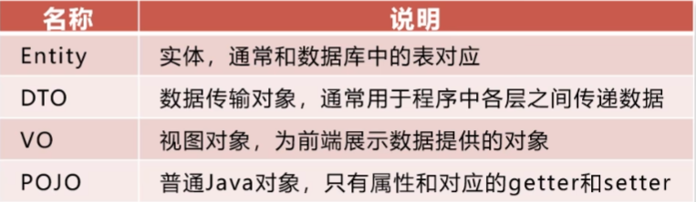
使用Git版本控制
创建Git本地仓库
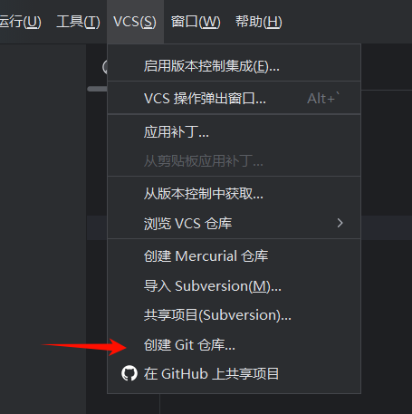
选择项目目录，出现GIT相关按钮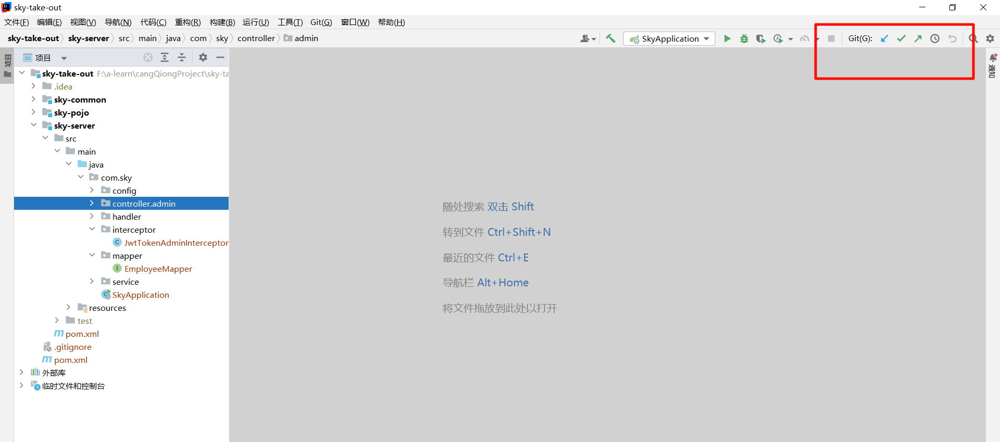
创建Git远程仓库 再Gitee或者Github上创建一个远程代码仓库。
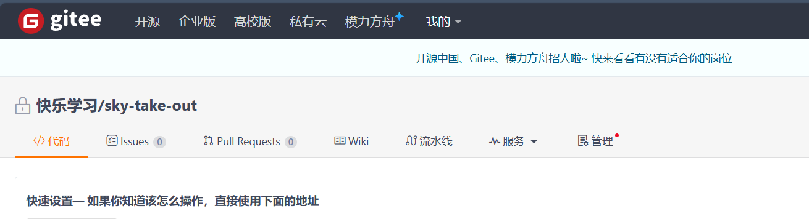
将项目代码推送到远程仓库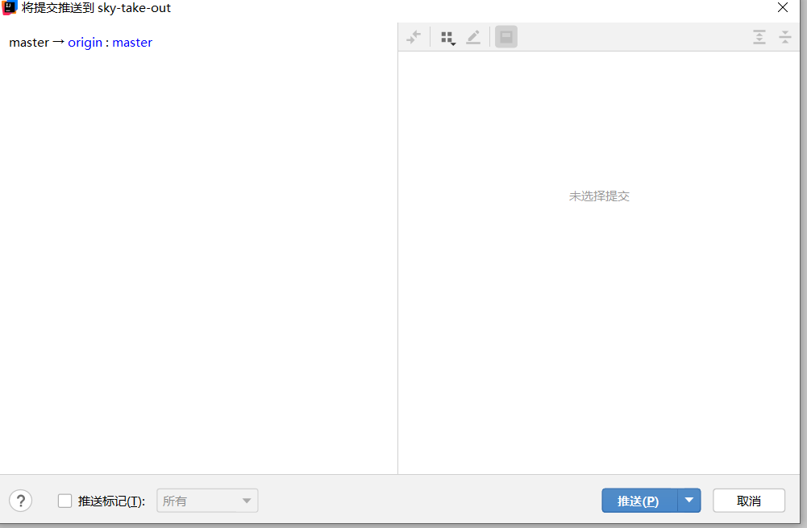
将本地文件推送到Git远程仓库
数据库环境搭建
通过资料中的数据库脚本创建数据库表结构
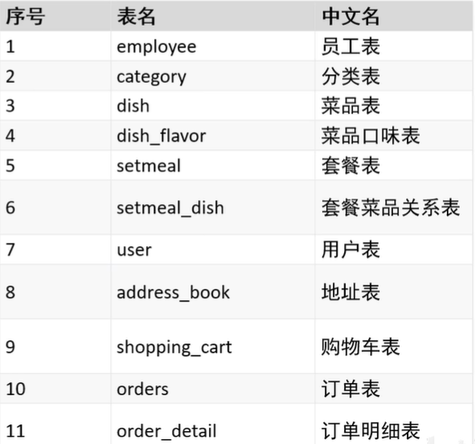
恢复数据库信息
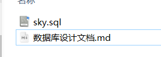
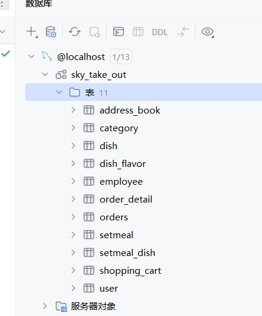
【补充】数据库设计文档
| 序号 | 数据表名 | 中文名称 |
|---|---|---|
| 1 | employee | 员工表 |
| 2 | category | 分类表 |
| 3 | dish | 菜品表 |
| 4 | dish_flavor | 菜品口味表 |
| 5 | setmeal | 套餐表 |
| 6 | setmeal_dish | 套餐菜品关系表 |
| 7 | user | 用户表 |
| 8 | address_book | 地址表 |
| 9 | shopping_cart | 购物车表 |
| 10 | orders | 订单表 |
| 11 | order_detail | 订单明细表 |
employee
employee表为员工表，用于存储商家内部的员工信息。具体表结构如下：
| 字段名 | 数据类型 | 说明 | 备注 |
|---|---|---|---|
| id | bigint | 主键 | 自增 |
| name | varchar(32) | 姓名 | |
| username | varchar(32) | 用户名 | 唯一 |
| password | varchar(64) | 密码 | |
| phone | varchar(11) | 手机号 | |
| sex | varchar(2) | 性别 | |
| id_number | varchar(18) | 身份证号 | |
| status | int | 账号状态 | 1正常 0锁定 |
| create_time | datetime | 创建时间 | |
| update_time | datetime | 最后修改时间 | |
| create_user | bigint | 创建人id | |
| update_user | bigint | 最后修改人id |
category
category表为分类表，用于存储商品的分类信息。具体表结构如下：
| 字段名 | 数据类型 | 说明 | 备注 |
|---|---|---|---|
| id | bigint | 主键 | 自增 |
| name | varchar(32) | 分类名称 | 唯一 |
| type | int | 分类类型 | 1菜品分类 2套餐分类 |
| sort | int | 排序字段 | 用于分类数据的排序 |
| status | int | 状态 | 1启用 0禁用 |
| create_time | datetime | 创建时间 | |
| update_time | datetime | 最后修改时间 | |
| create_user | bigint | 创建人id | |
| update_user | bigint | 最后修改人id |
dish
dish表为菜品表，用于存储菜品的信息。具体表结构如下：
| 字段名 | 数据类型 | 说明 | 备注 |
|---|---|---|---|
| id | bigint | 主键 | 自增 |
| name | varchar(32) | 菜品名称 | 唯一 |
| category_id | bigint | 分类id | 逻辑外键 |
| price | decimal(10,2) | 菜品价格 | |
| image | varchar(255) | 图片路径 | |
| description | varchar(255) | 菜品描述 | |
| status | int | 售卖状态 | 1起售 0停售 |
| create_time | datetime | 创建时间 | |
| update_time | datetime | 最后修改时间 | |
| create_user | bigint | 创建人id | |
| update_user | bigint | 最后修改人id |
dish_flavor
dish_flavor表为菜品口味表，用于存储菜品的口味信息。具体表结构如下：
| 字段名 | 数据类型 | 说明 | 备注 |
|---|---|---|---|
| id | bigint | 主键 | 自增 |
| dish_id | bigint | 菜品id | 逻辑外键 |
| name | varchar(32) | 口味名称 | |
| value | varchar(255) | 口味值 |
setmeal
setmeal表为套餐表，用于存储套餐的信息。具体表结构如下：
| 字段名 | 数据类型 | 说明 | 备注 |
|---|---|---|---|
| id | bigint | 主键 | 自增 |
| name | varchar(32) | 套餐名称 | 唯一 |
| category_id | bigint | 分类id | 逻辑外键 |
| price | decimal(10,2) | 套餐价格 | |
| image | varchar(255) | 图片路径 | |
| description | varchar(255) | 套餐描述 | |
| status | int | 售卖状态 | 1起售 0停售 |
| create_time | datetime | 创建时间 | |
| update_time | datetime | 最后修改时间 | |
| create_user | bigint | 创建人id | |
| update_user | bigint | 最后修改人id |
setmeal_dish
setmeal_dish表为套餐菜品关系表，用于存储套餐和菜品的关联关系。具体表结构如下：
| 字段名 | 数据类型 | 说明 | 备注 |
|---|---|---|---|
| id | bigint | 主键 | 自增 |
| setmeal_id | bigint | 套餐id | 逻辑外键 |
| dish_id | bigint | 菜品id | 逻辑外键 |
| name | varchar(32) | 菜品名称 | 冗余字段 |
| price | decimal(10,2) | 菜品单价 | 冗余字段 |
| copies | int | 菜品份数 |
user
user表为用户表，用于存储C端用户的信息。具体表结构如下：
| 字段名 | 数据类型 | 说明 | 备注 |
|---|---|---|---|
| id | bigint | 主键 | 自增 |
| openid | varchar(45) | 微信用户的唯一标识 | |
| name | varchar(32) | 用户姓名 | |
| phone | varchar(11) | 手机号 | |
| sex | varchar(2) | 性别 | |
| id_number | varchar(18) | 身份证号 | |
| avatar | varchar(500) | 微信用户头像路径 | |
| create_time | datetime | 注册时间 |
address_book
address_book表为地址表，用于存储C端用户的收货地址信息。具体表结构如下：
| 字段名 | 数据类型 | 说明 | 备注 |
|---|---|---|---|
| id | bigint | 主键 | 自增 |
| user_id | bigint | 用户id | 逻辑外键 |
| consignee | varchar(50) | 收货人 | |
| sex | varchar(2) | 性别 | |
| phone | varchar(11) | 手机号 | |
| province_code | varchar(12) | 省份编码 | |
| province_name | varchar(32) | 省份名称 | |
| city_code | varchar(12) | 城市编码 | |
| city_name | varchar(32) | 城市名称 | |
| district_code | varchar(12) | 区县编码 | |
| district_name | varchar(32) | 区县名称 | |
| detail | varchar(200) | 详细地址信息 | 具体到门牌号 |
| label | varchar(100) | 标签 | 公司、家、学校 |
| is_default | tinyint(1) | 是否默认地址 | 1是 0否 |
shopping_cart
shopping_cart表为购物车表，用于存储C端用户的购物车信息。具体表结构如下：
| 字段名 | 数据类型 | 说明 | 备注 |
|---|---|---|---|
| id | bigint | 主键 | 自增 |
| name | varchar(32) | 商品名称 | |
| image | varchar(255) | 商品图片路径 | |
| user_id | bigint | 用户id | 逻辑外键 |
| dish_id | bigint | 菜品id | 逻辑外键 |
| setmeal_id | bigint | 套餐id | 逻辑外键 |
| dish_flavor | varchar(50) | 菜品口味 | |
| number | int | 商品数量 | |
| amount | decimal(10,2) | 商品单价 | |
| create_time | datetime | 创建时间 |
orders
orders表为订单表，用于存储C端用户的订单数据。具体表结构如下：
| 字段名 | 数据类型 | 说明 | 备注 |
|---|---|---|---|
| id | bigint | 主键 | 自增 |
| number | varchar(50) | 订单号 | |
| status | int | 订单状态 | 1待付款 2待接单 3已接单 4派送中 5已完成 6已取消 |
| user_id | bigint | 用户id | 逻辑外键 |
| address_book_id | bigint | 地址id | 逻辑外键 |
| order_time | datetime | 下单时间 | |
| checkout_time | datetime | 付款时间 | |
| pay_method | int | 支付方式 | 1微信支付 2支付宝支付 |
| pay_status | tinyint | 支付状态 | 0未支付 1已支付 2退款 |
| amount | decimal(10,2) | 订单金额 | |
| remark | varchar(100) | 备注信息 | |
| phone | varchar(11) | 手机号 | |
| address | varchar(255) | 详细地址信息 | |
| user_name | varchar(32) | 用户姓名 | |
| consignee | varchar(32) | 收货人 | |
| cancel_reason | varchar(255) | 订单取消原因 | |
| rejection_reason | varchar(255) | 拒单原因 | |
| cancel_time | datetime | 订单取消时间 | |
| estimated_delivery_time | datetime | 预计送达时间 | |
| delivery_status | tinyint | 配送状态 | 1立即送出 0选择具体时间 |
| delivery_time | datetime | 送达时间 | |
| pack_amount | int | 打包费 | |
| tableware_number | int | 餐具数量 | |
| tableware_status | tinyint | 餐具数量状态 | 1按餐量提供 0选择具体数量 |
order_detail
order_detail表为订单明细表，用于存储C端用户的订单明细数据。具体表结构如下：
| 字段名 | 数据类型 | 说明 | 备注 |
|---|---|---|---|
| id | bigint | 主键 | 自增 |
| name | varchar(32) | 商品名称 | |
| image | varchar(255) | 商品图片路径 | |
| order_id | bigint | 订单id | 逻辑外键 |
| dish_id | bigint | 菜品id | 逻辑外键 |
| setmeal_id | bigint | 套餐id | 逻辑外键 |
| dish_flavor | varchar(50) | 菜品口味 | |
| number | int | 商品数量 | |
| amount | decimal(10,2) | 商品单价 |
前后端联调测试
设置好数据库连接信息，启动后端程序
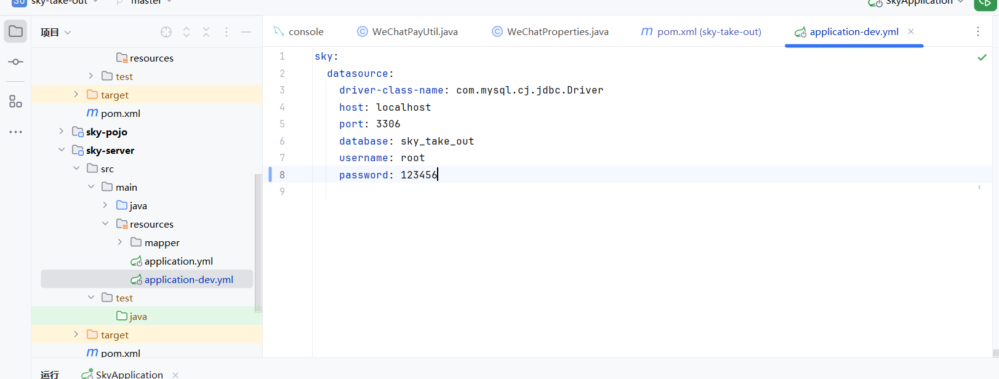
启动前端程序，登录，测试，可以进入管理平台，成功
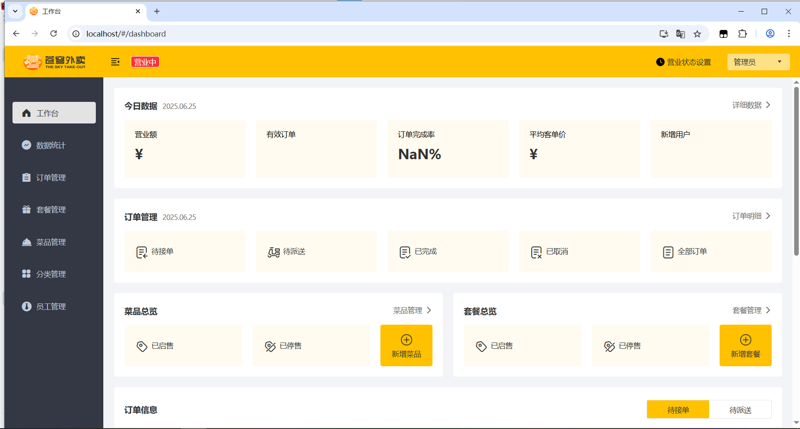
在本项目中，后端登录接口为/admin/employee/login
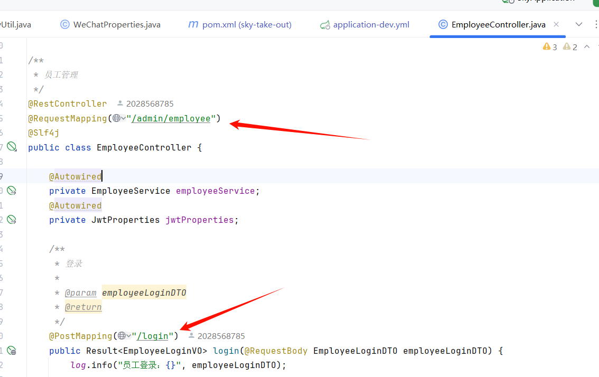
而前端请求的地址是：http://localhost/api/employee/login
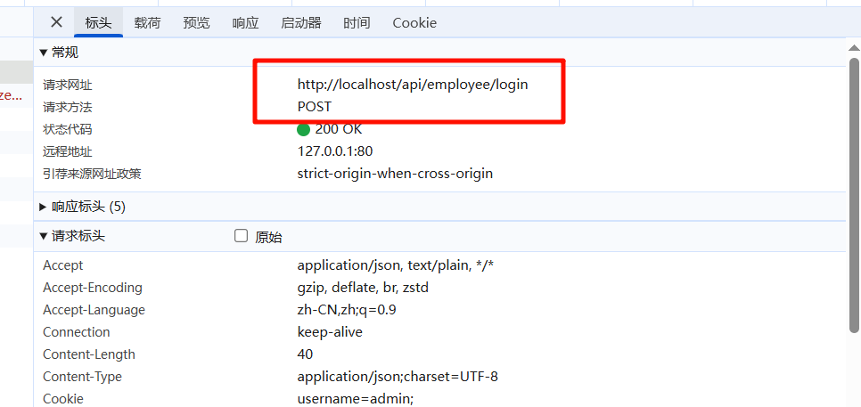
实现以上功能，使用的是nginx反向代理，就是将前端发送的动态请求由nginx转发到后端服务器
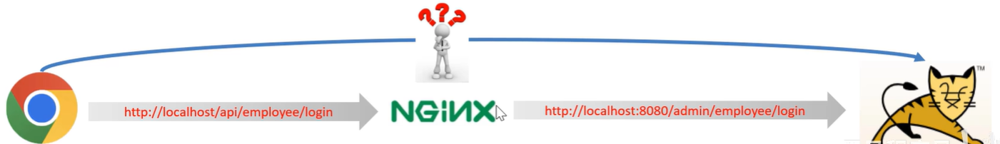
使用反向代理的好处
可以进行缓存，提高访问速度
可以进行负载均衡，把大量请求分配给集群中的多台服务器
可以保证后端服务的安全性
nginx反向代理的配置
xxxxxxxxxx# 反向代理,处理管理端发送的请求location /api/ {proxy_pass http://localhost:8080/admin/;#proxy_pass http://webservers/admin/;}
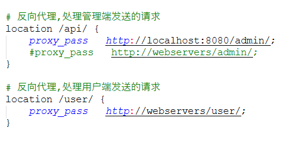
负载均衡配置
xxxxxxxxxxupstream webservers{server 127.0.0.1:8080 weight=90 ;#server 127.0.0.1:8088 weight=10 ;}
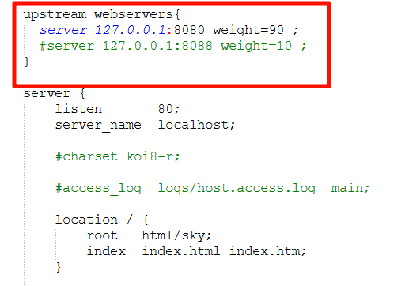
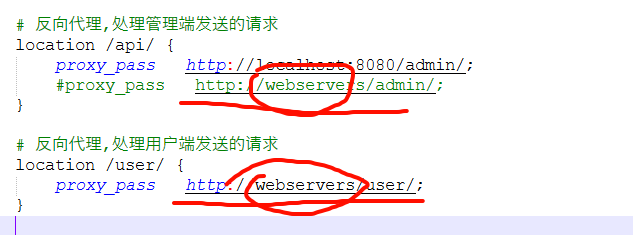
更多详细的Nginx服务器配置相关操作，参考《Nginx教程》
登陆完善
当前登录问题：员工表中的密码是明文存储，安全性太低。
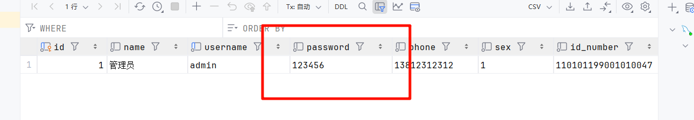
解决方案：将密码加密后存储，提高安全性
MD5加密（本项目）---不可逆加密方式
hash加密
对称加密
非对称加密
功能完善
小技巧：在注释中添加TODO 可以标记当前未完成的功能
xxxxxxxxxx// TODO 后期需要进行md5加密，然后再进行比对
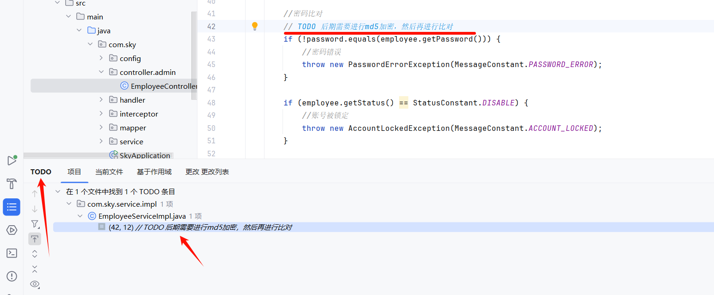
修改数据库中的明文密码为加密后的密码
xxxxxxxxxx123456MD5加密e10adc3949ba59abbe56e057f20f883e修改Java代码，对前端的密码进行加密
xxxxxxxxxx//密码比对// TODO 后期需要进行md5加密，然后再进行比对password= DigestUtils.md5DigestAsHex(password.getBytes());if (!password.equals(employee.getPassword())) {//密码错误throw new PasswordErrorException(MessageConstant.PASSWORD_ERROR);}if (employee.getStatus() == StatusConstant.DISABLE) {//账号被锁定throw new AccountLockedException(MessageConstant.ACCOUNT_LOCKED);}
导入接口文档
前后端分离开发的流程图
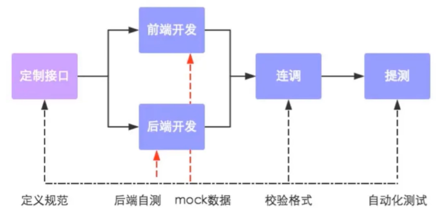
将资料中提供的接口数据导入到接口管理平台中。
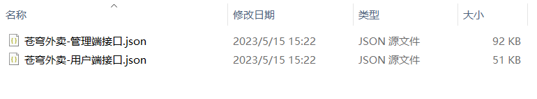
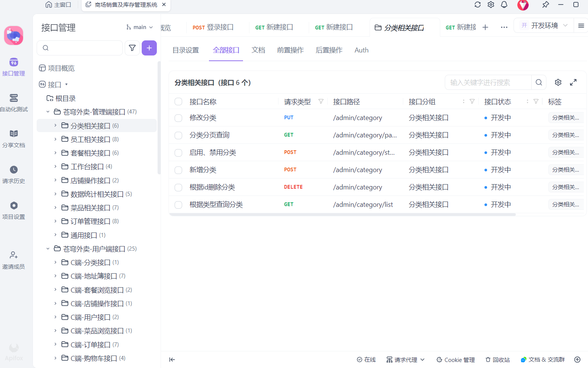
【注】接口管理平台推荐
| 平台 | 自动同步更新 | 公司/社区 |
|---|---|---|
| Swagger | 实时 | Linux基金会 |
| Swagger+Knife4j | 实时 | xiaoymin |
| RAP2 | N/A | Alibaba |
| YApi | 定时 | 去哪儿 |
| Apifox | 定时 | 睿狐科技 |
| Redoc | 实时 | Rebilly |
Swagger
介绍
Swagger 是一套用于设计、构建、文档化和测试 RESTful API 的开源工具集。
Swagger 提供了一种标准化的方式来描述 API 的结构、请求参数、响应格式等信息，使得前后端开发人员能够更高效地协作。
官网：API Documentation & Design Tools for Teams | Swagger
Knife4j
Knife4i是为JavaMVC框架集成Swagger生成Api文档的增强解决方案。
Knife4j的前身是swagger-bootstrap-ui,前身swagger-bootstrap-ui是一个纯swagger-ui的ui皮肤项目
一开始项目初衷是为了写一个增强版本的swagger的前端ui,但是随着项目的发展,面对越来越多的个性化需求,不得不编写后端Java代码以满足新的需求,在swagger-bootstrap-ui的1.8.5~1.9.6版本之间,采用的是后端Java代码和Ui都混合在一个Jar包里面的方式提供给开发者使用.这种方式虽说对于集成swagger来说很方便,只需要引入jar包即可,但是在微服务架构下显得有些臃肿。
因此,项目正式更名为knife4j,取名knife4j是希望她能像一把匕首一样小巧,轻量,并且功能强悍,更名也是希望把她做成一个为Swagger接口文档服务的通用性解决方案,不仅仅只是专注于前端Ui前端.
swagger-bootstrap-ui的所有特性都会集中在knife4j-spring-ui包中,并且后续也会满足开发者更多的个性化需求.
主要的变化是,项目的相关类包路径更换为com.github.xiaoymin.knife4j前缀,开发者使用增强注解时需要替换包路径
后端Java代码和ui包分离为多个模块的jar包,以面对在目前微服务架构下,更加方便的使用增强文档注解(使用SpringCloud微服务项目,只需要在网关层集成UI的jar包即可,因此分离前后端)
官网：Knife4j · 集Swagger2及OpenAPI3为一体的增强解决方案. | Knife4j
使用方式
在pom中导入Knife4j的starter，Maven坐标
xxxxxxxxxx<dependency><groupId>com.github.xiaoymin</groupId><artifactId>knife4j-openapi3-jakarta-spring-boot-starter</artifactId><version>4.4.0</version></dependency>在配置类中加入knife4j相关配置
xxxxxxxxxx/*** 通过knife4j生成接口文档* @return*/@Beanpublic Docket docket() {ApiInfo apiInfo = new ApiInfoBuilder().title("苍穹外卖项目接口文档").version("2.0").description("苍穹外卖项目接口文档").build();Docket docket = new Docket(DocumentationType.SWAGGER_2).apiInfo(apiInfo).select().apis(RequestHandlerSelectors.basePackage("com.sky.controller")).paths(PathSelectors.any()).build();return docket;}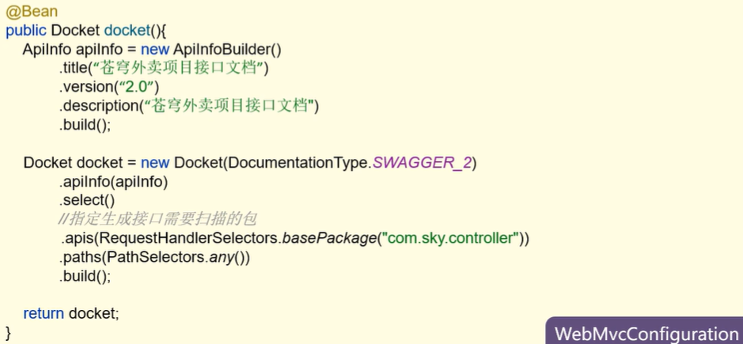
设置静态资源映射，否则接口文档页面无法访问
xxxxxxxxxx/*** 设置静态资源映射* @param registry*/protected void addResourceHandlers(ResourceHandlerRegistry registry) {registry.addResourceHandler("/doc.html").addResourceLocations("classpath:/META-INF/resources/");registry.addResourceHandler("/webjars/**").addResourceLocations("classpath:/META-INF/resources/webjars/");}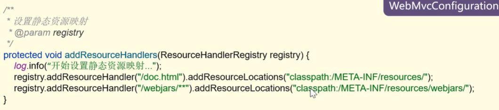
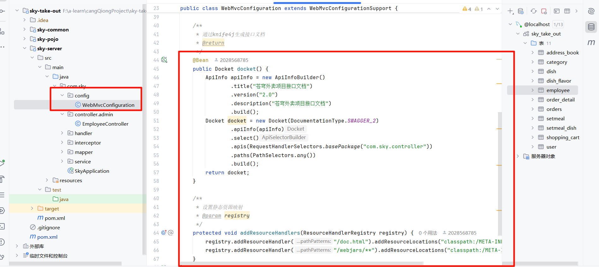
配置完成后重启项目，访问：
http://localhost:8080/doc.html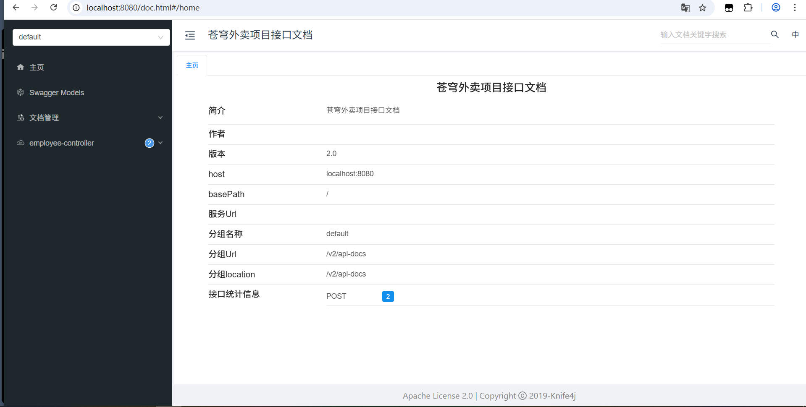
可以看到生成的接口文档
常见注解
| 注解 | 说明 |
|---|---|
| @Api | 用在类上，例如Controller，表示对类的说明 |
| @ApiModel | 用在类上，例如：entity，DTO，VO |
| @ApiModelProperty | 用在属性上，描述属性 |
| @ApiOperation | 用在方法上，例如Controller的方法，说明方法的用途、作用 |
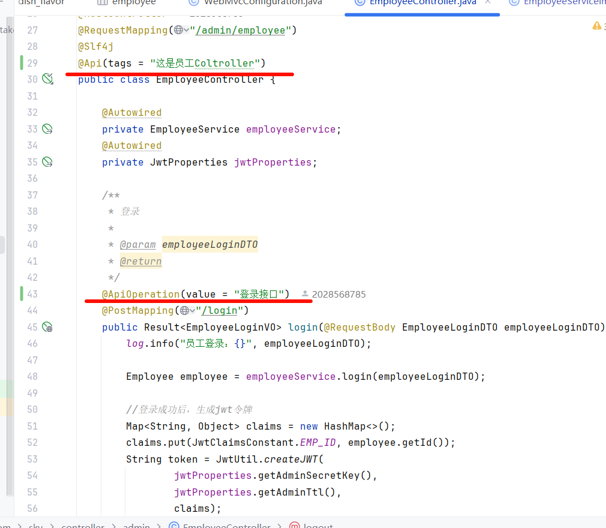
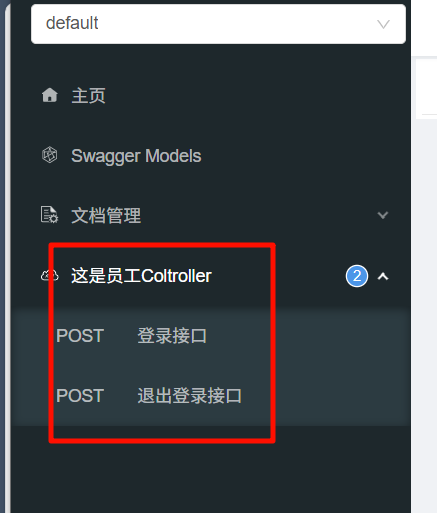
项目接口功能实现
本项目约定： 管理端发出的请求，统一使用/admin作为前缀 用户端发出的请求，统一使用/user作为前缀
员工管理模块
新增员工
产品原型 输入账号，员工姓名，手机号，性别，身份证号，完成员工账号的注册，默认密码123456
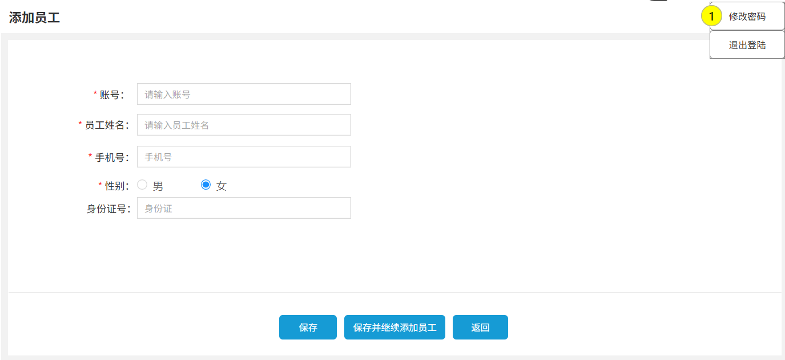
代码开发
根据新增员工接口设计对应的DTO
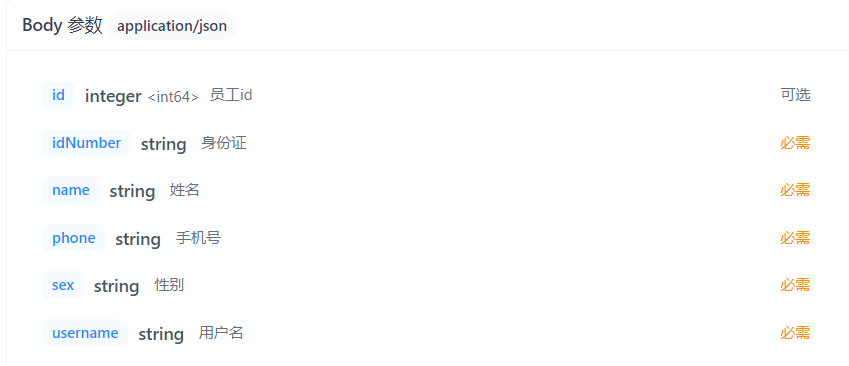
xxxxxxxxxxpackage com.sky.dto;import lombok.Data;import java.io.Serializable;@Datapublic class EmployeeDTO implements Serializable {private Long id;private String username;private String name;private String phone;private String sex;private String idNumber;}
Controller 层业务代码示例
xxxxxxxxxx("新增员工")()public Result<String> register( EmployeeDTO employeeDTO) { employeeService.save(employeeDTO); return Result.success();}server层业务代码
xxxxxxxxxxpublic void save(EmployeeDTO employeeDTO) { Employee employee = new Employee(); BeanUtils.copyProperties(employeeDTO, employee);
// 设置默认密码 employee.setPassword(DigestUtils.md5DigestAsHex(PasswordConstant.DEFAULT_PASSWORD.getBytes()));
// 设置默认状态 employee.setStatus(StatusConstant.DISABLE);
// 设置创建和修改时间 employee.setCreateTime(LocalDateTime.now()); employee.setUpdateTime(LocalDateTime.now());
// 设置创建人ID和修改人ID // TODO 创建修改人ID后期动态获取 employee.setCreateUser(10L); employee.setUpdateUser(10L);
employeeMapper.insert(employee);}Mapper层
xxxxxxxxxx("insert into employee (name, username, password, phone, sex, id_number, create_time, update_time, create_user, update_user) " + "values " + "(#{name},#{username},#{password},#{phone},#{sex},#{create_time},#{},#{update_time},#{create_user},#{update_user})")void insert(Employee employee);
代码优化
问题1：当用户名已存在时，前端会出现500响应码
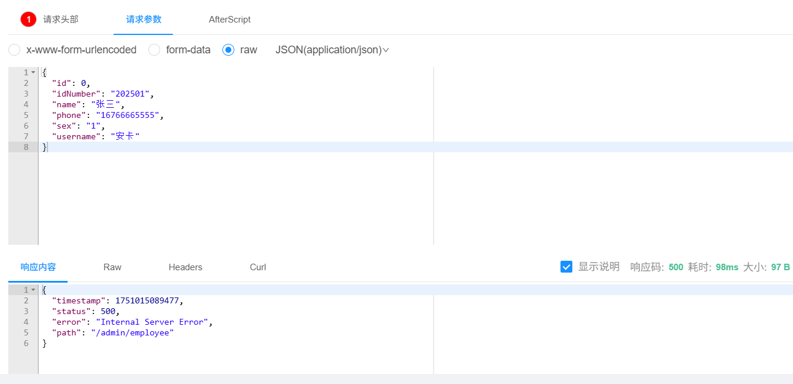
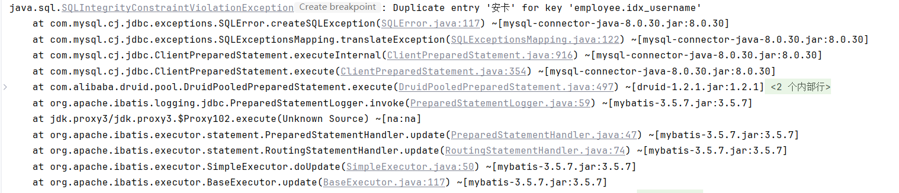
xxxxxxxxxx// 在异常处理器中定义一个处理该错误的方法public Result exceptionHandler( SQLIntegrityConstraintViolationException ex){ return Result.error("账号已存在");
}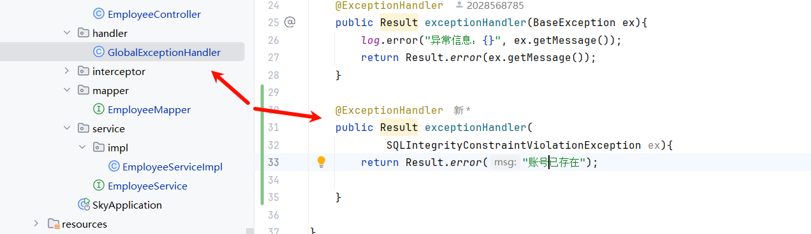
问题2：在创建人ID和修改人ID部分使用了固定值，应动态获取
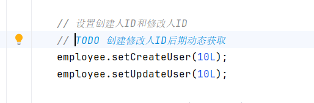
后续请求中，前端会携带JWT令牌，通过WT令牌可以解析出当前登录员工id
【补充】ThreadLocal介绍 ThreadLocal并不是一个Thread，而是Thread的局部变量。 ThreadLocal为每个线程提供单独一份存储空间，具有线程隔离的效果，只有在线程内才能获取到对应的值，线程外则不能访问。
定义工具类
xxxxxxxxxxpackage com.sky.context;
public class BaseContext {
public static ThreadLocal<Long> threadLocal = new ThreadLocal<>();
public static void setCurrentId(Long id) { threadLocal.set(id); }
public static Long getCurrentId() { return threadLocal.get(); }
public static void removeCurrentId() { threadLocal.remove(); }
}在解析JWT令牌后存入ThreadLocal
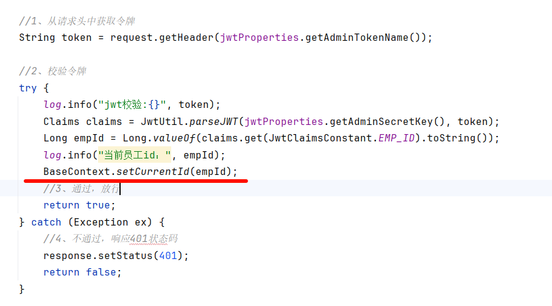
在使用时通过Get方法获取值
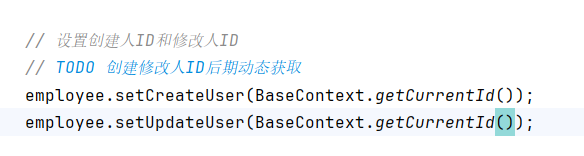
员工分页查询
接口设计
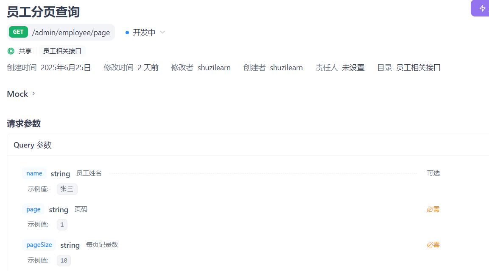
Controller
xxxxxxxxxx/** * * 员工列表分页查询 */("员工分页查询")("/page")public Result<PageResult> GetEmployeePage(EmployeePageQueryDTO employeePageQueryDTO) { return employeeService.getEmployee(employeePageQueryDTO);
}server
xxxxxxxxxxpublic Result<PageResult> getEmployee(EmployeePageQueryDTO employeePageQueryDTO) { PageHelper.startPage(employeePageQueryDTO.getPage(),employeePageQueryDTO.getPageSize()); Page<Employee> page = employeeMapper.getEmployee(employeePageQueryDTO.getName()); PageResult pageResult = new PageResult(); pageResult.setTotal(page.getTotal()); pageResult.setRecords(page.getResult()); return Result.success(pageResult);}Mapper
xxxxxxxxxxPage<Employee> getEmployee(String name);
Mapper.XML
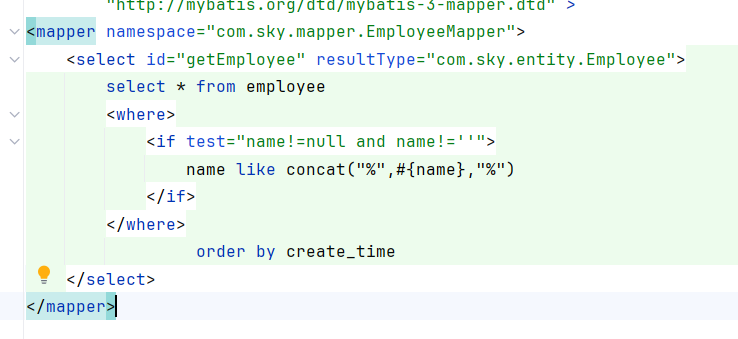
代码完善
在时间显示中，操作时间格式显示不正确，需要对时间进行格式化输出
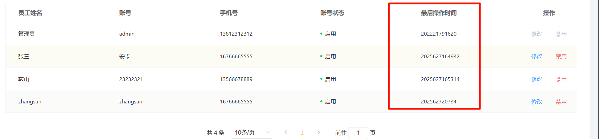
解决方案：
在属性上加上注解，对日期进行格式化
xxxxxxxxxx@JsonFormat(pattern = "yyyy-MM-dd HH:mm:ss")private LocalDateTime updateTime;在WebMvcConfiguration中扩展Spring MVC的消息转换器统一对时间进行格式化处理。
xxxxxxxxxxprotected void extendMessageConverters(List<HttpMessageConverter<?>> converters) {// 自定义消息转换器，并将其加入到消息转换器队列MappingJackson2HttpMessageConverter converter = new MappingJackson2HttpMessageConverter();converter.setObjectMapper(new JacksonObjectMapper());converters.add(0,converter);}前后端联调测试，成功
启用禁用员工账号
接口设计
Controller
xxxxxxxxxx/** * 修改员工状态 */("修改员工状态")("status/{status}")public Result<String> changeStatus( Integer status,Long id) { employeeService.stareOrStop(status,id); return Result.success();
}Server
xxxxxxxxxxpublic void stareOrStop(Integer status, Long id) { Employee buildEmp = Employee.builder().status(status).id(id).build(); employeeMapper.ChangeEmp(buildEmp);}Mapper.xml
SQL设置成适配多种修改信息的。提高适用性
xxxxxxxxxx<update id="ChangeEmp"> update employee <set> <if test="name!=null and name!=''">name = #{name},</if> <if test="username!=null">username = #{username}</if> <if test="password!=null">password = #{password}</if> <if test="phone!=null">phone = #{phone}</if> <if test="sex!=null">sex = #{sex}</if> <if test="idNumber!=null">id_Number = #{idNumber}</if> <if test="updateTime!=null">update_Time = #{updateTime}</if> <if test="updateUser!=null">update_User = #{updateUser}</if> <if test="status!=null">status = #{status}</if> </set> where id = #{id}</update>功能测试成功
编辑员工信息
需求分析与接口设计
根据员工ID查询员工信息
编辑员工信息接口
代码实现示例
xxxxxxxxxx/** * 根据ID查询员工信息 */("根据ID查询员工信息")("/{id}")public Result GetEmployeeById( Long id) { Employee employee = employeeService.getEmployeeById(id); return Result.success(employee);}
/** * 编辑员工信息 */
("编辑员工信息")public Result updateEmployee( EmployeeDTO employeeDTO) { employeeService.updateEmp(employeeDTO); return Result.success();}xxxxxxxxxxpublic Employee getEmployeeById(Long id) { Employee employee = employeeMapper.getEmployeeById(id); employee.setPassword("****"); return employee;}
public void updateEmp(EmployeeDTO employeeDTO) { Employee employee = new Employee(); BeanUtils.copyProperties(employeeDTO, employee); employee.setUpdateUser(BaseContext.getCurrentId()); employee.setUpdateTime(LocalDateTime.now()); employeeMapper.ChangeEmp(employee);}xxxxxxxxxxvoid ChangeEmp(Employee buildEmp);
("SELECT * FROM employee where id=#{id}")Employee getEmployeeById(Long id);xxxxxxxxxx<update id="ChangeEmp"> update employee <set> <if test="name!=null and name!=''">name = #{name},</if> <if test="username!=null">username = #{username}</if> <if test="password!=null">password = #{password}</if> <if test="phone!=null">phone = #{phone}</if> <if test="sex!=null">sex = #{sex}</if> <if test="idNumber!=null">id_Number = #{idNumber}</if> <if test="updateTime!=null">update_Time = #{updateTime}</if> <if test="updateUser!=null">update_User = #{updateUser}</if> <if test="status!=null">status = #{status}</if> </set> where id = #{id}</update>
菜品分类与上方代码类似
菜品分类与上方代码类似
菜品分类与上方代码类似
【补充】公共字段自动填充
问题分析
在业务表中，有许多公共字段。例如：
| 字段名 | 数据类型 | 备注 | 操作类型 |
|---|---|---|---|
| create_time | datetime | 创建时间 | insert |
| create_user | bigint | 创建人ID | insert |
| update_time | datetime | 修改时间 | insert,update |
| update_user | bigint | 修改人ID | insert,update |
代码冗余。不便于后期维护
解决方案
自定义注解AutoFill，用于标识需要进行公共字段自动填充的方法
xxxxxxxxxxpackage com.sky.anotation;import com.sky.enumeration.OperationType;import java.lang.annotation.ElementType;import java.lang.annotation.Retention;import java.lang.annotation.RetentionPolicy;import java.lang.annotation.Target;/*** 自定义注解，用于标识某些需要特殊处理的方法*/(ElementType.METHOD)(RetentionPolicy.RUNTIME)public @interface AutoFill {// 导入需要操作的类型（常量）OperationType value();}自定义切面类AutoFillAspect，统一拦截加入了AutoFill注解的方法，通过反射为公共字段赋值
xxxxxxxxxxpackage com.sky.aspect;import com.sky.anotation.AutoFill;import com.sky.constant.AutoFillConstant;import com.sky.context.BaseContext;import com.sky.enumeration.OperationType;import lombok.extern.slf4j.Slf4j;import org.aspectj.lang.JoinPoint;import org.aspectj.lang.Signature;import org.aspectj.lang.annotation.Aspect;import org.aspectj.lang.annotation.Before;import org.aspectj.lang.annotation.Pointcut;import org.aspectj.lang.reflect.MethodSignature;import org.springframework.stereotype.Component;import java.lang.reflect.Method;import java.time.LocalDateTime;/*** 自定义切面类，实现公共字段自动填充*/public class AutoFillAspect {// 定义切入点("execution(* com.sky.mapper.*.*(..)) && @annotation(com.sky.anotation.AutoFill)")public void AutoFillPointCut() {}/*** 定义通知* 前置通知（√）* 后置通知* 。。。*/("AutoFillPointCut()")public void beforeAutoFill(JoinPoint joinPoint) {log.info("切入");// 获取到当前的操作类型MethodSignature signature = (MethodSignature) joinPoint.getSignature();AutoFill autoFill = signature.getMethod().getAnnotation(AutoFill.class);OperationType operationType = autoFill.value();// 获取当前被拦截的方法的参数（实体对象）Object[] args = joinPoint.getArgs();if (args==null || args.length==0) {return;}Object object = args[0];// 准备赋值的数据LocalDateTime now = LocalDateTime.now();Long id = BaseContext.getCurrentId();// 根据操作类型将数据赋值给实体if (operationType==OperationType.INSERT) {// 插入操作。需要为四个字段赋值try {Method setCreateTime = object.getClass().getDeclaredMethod(AutoFillConstant.SET_CREATE_TIME, LocalDateTime.class);Method setCreateUser = object.getClass().getDeclaredMethod(AutoFillConstant.SET_CREATE_USER, Long.class);Method setUpdateTime = object.getClass().getDeclaredMethod(AutoFillConstant.SET_UPDATE_TIME, LocalDateTime.class);Method setUpdateUser = object.getClass().getDeclaredMethod(AutoFillConstant.SET_UPDATE_USER, Long.class);setCreateTime.invoke(object, now);setCreateUser.invoke(object, id);setUpdateTime.invoke(object, now);setUpdateUser.invoke(object, id);} catch (Exception e) {throw new RuntimeException(e);}}else if (operationType==OperationType.UPDATE) {// 更新操作。需要对两个字段赋值try {Method setUpdateTime = object.getClass().getDeclaredMethod(AutoFillConstant.SET_UPDATE_TIME, LocalDateTime.class);Method setUpdateUser = object.getClass().getDeclaredMethod(AutoFillConstant.SET_UPDATE_USER, Long.class);setUpdateTime.invoke(object, now);setUpdateUser.invoke(object, id);} catch (Exception e) {throw new RuntimeException(e);}}}}在Mapper的方法上加入AutoFill注解
xxxxxxxxxxpublic interface CategoryMapper {Page<Category> getAllCategory(CategoryPageQueryDTO queryDTO);(OperationType.UPDATE)void updateCategory(Category category);("insert into category (TYPE, NAME, SORT, STATUS, CREATE_TIME, UPDATE_TIME, CREATE_USER, UPDATE_USER) VALUES " +"(#{type},#{name},#{sort},#{status},#{createTime},#{updateTime},#{createUser},#{updateUser})")(value = OperationType.INSERT)void addCategory(Category category);("select * from category where type=#{type}")Category getCategoryByType(String type);}
技术点：枚举、注解、AOP、反射
菜品管理模块
新增菜品
接口设计与描述
业务规则：
菜品名称必须是唯一的
菜品必须属于某个分类下，不能单独存在
新增菜品时可以根据情况选择菜品的口味
每个菜品必须对应一张图片
需要的接口
根据类型查询分类（已完成）
文件上传
新增菜品
示例代码展示
controller
xxxxxxxxxx/** * 新增菜品的接口 * @param dish * @return */("新增菜品接口")public Result addDish( DishDTO dish) { dishService.addDish(dish); return Result.success();
}Service
xxxxxxxxxxpublic void addDish(DishDTO dish) { Dish dish1 = new Dish(); BeanUtils.copyProperties(dish, dish1);
// 新增菜品信息 // 将菜品信息插入数据表，再获得该菜品的ID Long id =dishMapper.addDish(dish1);
// 将菜品ID赋给口味 List<DishFlavor> flavors = dish.getFlavors(); for (DishFlavor f : flavors) { f.setDishId(id); } // 插入菜品的口味信息 dishFlavorMapper.addFlavor(flavors);
}Mapper
xxxxxxxxxxpublic interface DishMapper { ("SELECT COUNT(id) from dish where category_id=#{id} ") int deleteByCategoryID(Long id);
(value = OperationType.INSERT) Long addDish(Dish dish);}XML (DishMapper)
xxxxxxxxxx <mapper namespace="com.sky.mapper.DishMapper">
<insert id="addDish" useGeneratedKeys="true" keyProperty="id"> insert into dish (name, category_id, price, image, description, status, create_time, update_time, create_user, update_user) VALUES (#{name},#{categoryId},#{price},#{image},#{description},#{status},#{createTime},#{updateTime},#{createUser},#{updateUser})
</insert></mapper>
(DishFlavorMapper)
xxxxxxxxxx <mapper namespace="com.sky.mapper.DishFlavorMapper">
<insert id="addFlavor"> INSERT INTO dish_flavor (dish_id, name, value) VALUES <foreach collection="flavors" item="item" separator=","> (#{item.dishId}, #{item.name}, #{item.value}) </foreach> </insert></mapper>
菜品分页查询
接口设计
代码示例
在返回值字段中，有一个新的字段categoryName没有合适的实体类进行封装，需要设计一个新的VO
xxxxxxxxxxpackage com.sky.vo;
import com.sky.entity.DishFlavor;import lombok.AllArgsConstructor;import lombok.Builder;import lombok.Data;import lombok.NoArgsConstructor;import java.io.Serializable;import java.math.BigDecimal;import java.time.LocalDateTime;import java.util.ArrayList;import java.util.List;
public class DishVO implements Serializable {
private Long id; //菜品名称 private String name; //菜品分类id private Long categoryId; //菜品价格 private BigDecimal price; //图片 private String image; //描述信息 private String description; //0 停售 1 起售 private Integer status; //更新时间 private LocalDateTime updateTime; //分类名称 private String categoryName; //菜品关联的口味 private List<DishFlavor> flavors = new ArrayList<>();
//private Integer copies;}
sql映射文件xml
xxxxxxxxxx <select id="getDishList" resultType="com.sky.vo.DishVO"> SELECT d.*,c.name AS category_name <!-- 建议明确指定别名，避免字段名冲突 --> FROM dish d left join category c on d.category_id = c.id <where>
<if test="name != null"> AND d.name LIKE CONCAT('%', #{name}, '%') <!-- 注意：字段名前加表别名 --> </if> <if test="categoryId != null"> AND d.category_id = #{categoryId} <!-- 去掉逗号 --> </if> <if test="status != null"> AND d.status = #{status} <!-- 去掉逗号 --> </if> </where> </select>
修改菜品信息
接口设计：
根据id查询菜品 主要业务代码（service层)
xxxxxxxxxxpublic DishVO QueryDishById(Long id) {// 查询菜品信息DishVO dish = dishMapper.queryDishById(id);// 根据菜品ID查询口味信息List<DishFlavor> flavors = dishFlavorMapper.queryByDishId(dish.getId());dish.setFlavors(flavors);return dish;}根据类型查询分类（已实现）
文件上传 (已实现)
修改菜品
菜品信息删除
业务需求分析
一次可以删除一个菜品，也可以批量删除菜品
当前起售中的菜品不能被删除
已被套餐关联的菜品不能被删除
删除菜品后，关联的口味数据也需要删除
业务代码实现示例
controller
xxxxxxxxxx/** * 这是菜品删除接口 * @param ids * @return */("菜品删除")public Result deleteDish( List<Long> ids) { dishService.delDishBatch(ids); return Result.success();}Service
xxxxxxxxxx/** * 删除菜品信息的逻辑 * @param ids */public void delDishBatch(List<Long> ids) {
// 先检查菜品是否被起售，当前起售中的菜品不能被删除 for (Long id : ids) {
int status = dishMapper.findStatus(id); if (status == StatusConstant.ENABLE) { throw new DeletionNotAllowedException("菜品已上架，无法删除");
} }
// 检查菜品是否被套餐关联，已被套餐关联的菜品不能被删除 List<Long> count = setmealDishMapper.findSetmealDish(ids); if (count!=null && count.size() > 0) { throw new DeletionNotAllowedException("有菜品已与套餐绑定，无法删除"); } // 删除菜品数据 dishMapper.deleteDishById(ids); // 删除菜品后，关联的口味数据也需要删除 dishFlavorMapper.deleteFlavorByDishId(ids);
}Mapper.XML
xxxxxxxxxx<delete id="deleteDishById"> delete from dish where id in <foreach collection="ids" item="id" separator="," open="(" close=")"> #{id} </foreach></delete>
Redis
Redis介绍
什么是Redis？
Redis 是一个强大的内存数据结构存储，用作数据库、缓存和消息代理。
Redis 与Mysql的区别
前者是将数据存储在内存中，后者将数据存储在磁盘中
前者使用key-value存储，后者通过二维表进行存储
Redis 的优势
基于内存存储，读写速度高
适合存储热点数据居（例如：热点商品、资讯、新闻）
数据类型丰富。
支持丰富的个性化内容。Redis 支持通知、消息发布/订阅、键过期等特性。
下载与安装
redis为绿色版，直接解压后就可以使用
Another Redis Desktop Manager | Redis桌面(GUI)管理客户端，兼容Windows、Mac、Linux
Redis数据类型
Redis存储的是key-value结构的数据，其中key是字符串类型，value有5种常用的数据类型：
字符串 string：普通字符串，Redis中最简单的数据类型
哈希 hash：也叫散列，类似于Java中的HashMap结构
列表list：按照插入顺序排序，可以有重复元素，类似于Java中的LinkedList
集合 set：无序集合，没有重复元素，类似于Java中的HashSet
有序集合sorted set/zset：集合中每个元素关联一个分数 （score），根据分数升序排序，没有重复元素
Redis常用指令
字符串操作命令
| 语句 | 描述 |
|---|---|
| SET key value | 设置指定Key的值 |
| GET key | 获取指定Key的值 |
| SETEX key seconds value | 设置指定Key的值，并设置过期时间seconds秒 |
| SETEX key value | 只在key不存在时，设置key的值 |

哈希操作命令
Redishash是一个string类型的field和value的映射表，hash特别适合用于存储对象，常用命令：
| 指令 | 描述 |
|---|---|
| HSET key field value | 将哈希表key中的字段field的值设为value |
| HGET key field | 获取存储在哈希表中指定字段的值 |
| HDEL key field | 删除存储在哈希表中的指定字段 |
| HKEYS key | 获取哈希表中所有字段 |
| HVALS key | 获取哈希表中所有值 |
列表操作命令
| 指令 | |
|---|---|
| LPUSH key value1 [value2] | 将一个或多个值插入到列表头部 |
| LRANGE key start stop | 获取列表指定范围内的元素 |
| RPOP key | 移除并获取列表的最后一个元素 |
| LLEN key | 获取列表长度 |
集合操作命令
Redis set是string类型的无序集合。集合成员是唯一的，集合中不能出现重复的数据，常用命令：
| 指令 | 描述 |
|---|---|
| sadd key member1 [member2] | 向集合添加一个或多个成员 |
| smembers key | 返回集合中的所有成员 |
| scard key | 获取集合的成员数 |
| sinter key1 [key2] | 返回给定所有集合的交集 |
| sunion key1 [key2] | 返回所有给定集合的并集 |
| srem key member1 [member2] | 删除集合中一个或多个成员 |
有序集合操作命令
Redis有序集合是string类型元素的集合，且不允许有重复成员。每个元素都会关联一个double类型的分数。常用命令：
| 语法 | 描述 |
|---|---|
| zadd key score1 member1 [score2 member2] | 向有序集合添加一个或多个成员 |
| zrange key start stop [withscores] | 通过索引区间返回有序集合中指定区间内的成员 |
| zincrby key increment member | 有序集合中对指定成员的分数加上增量increment |
| zrem key member [member ] | 移除有序集合中的一个或多个成员 |

通用命令
Redis通用命令是不分数据类型的，都可以使用的命令：
| 指令 | 描述 |
|---|---|
| keys pattern | 查找所有符合给定模式(pattern)的key |
| exists key | 检查给定key是否存在 |
| type key | 返回key所储存的值的类型 |
| del key | 该命令用于在key存在是删除key |
Java中操作Redis
Redis的Java客户端
Spring Data Redis
SpringDataRedis是Spring的一部分，对Redis底层开发包进行了高度封装。 在Spring项目中，可以使用SpringData Redis来简化操作。
Jedis
Lettuce
Spring Data Redis使用方式
导入Spring Data Redis 的 Maven坐标
xxxxxxxxxx<!-- https://mvnrepository.com/artifact/org.springframework.boot/spring-boot-starter-data-redis --><dependency><groupId>org.springframework.boot</groupId><artifactId>spring-boot-starter-data-redis</artifactId><version>3.5.3</version></dependency>配置Redis数据源
xxxxxxxxxxspring:redis:host: localhostport: 6379password: 123456编写配置类，创建RedisTemplate对象
xxxxxxxxxxpackage com.sky.config;import org.springframework.context.annotation.Bean;import org.springframework.context.annotation.Configuration;import org.springframework.data.redis.connection.RedisConnectionFactory;import org.springframework.data.redis.core.RedisTemplate;import org.springframework.data.redis.serializer.StringRedisSerializer;public class RedisConfiguration {public RedisTemplate redisTemplate(RedisConnectionFactory redisConnectionFactory) {RedisTemplate redisTemplate = new RedisTemplate();// 设置redis连接工厂对象redisTemplate.setConnectionFactory(redisConnectionFactory);// 设置redis key 序列化对象redisTemplate.setKeySerializer(new StringRedisSerializer());return redisTemplate;}}通过RedisTemplate对象操作Redis
xxxxxxxxxxpublic void testString() {// 操作String类型的数据ValueOperations valueOperations = redisTemplate.opsForValue();valueOperations.set("city", "Beijing");System.out.println(valueOperations.get("city"));valueOperations.set("name", "xiaoming", 3, TimeUnit.MINUTES);valueOperations.setIfAbsent("age", "17");valueOperations.setIfAbsent("age", "18");}public void test2Hash() {// 操作Hash类型的数据HashOperations hashOperations = redisTemplate.opsForHash();hashOperations.put("people","name","xiaoming" );hashOperations.put("people","age","18" );hashOperations.put("people","gender","man" );// 获取字段hashOperations.get("people","name");// 获取全部keyshashOperations.keys("people");// 获取全部valuehashOperations.values("people");// 删除字段hashOperations.delete("people","gender");}其他数据类型，操作方式与以上类似
店铺营业状态设置
接口设计：
设置营业状态
管理端查询营业状态
用户端查询营业状态
营业状态数据存储方式：基基于Redis的字符串来进行存储
| key | value |
|---|---|
| SHOP_STATUS | 1/0 |
xxxxxxxxxx("adminShopController")("/admin/shop")public class ShopController { // 导入配置类 private RedisTemplate redisTemplate;
/** * 查询营业状态 * @return */ ("/status") public Result getStatus() { Integer status = (Integer) redisTemplate.opsForValue().get("SHOP_STATUS"); return Result.success(status); }
/** * 设置店铺营业状态 * @param status * @return */ ("/{status}") public Result updateStatus(("status") Integer status) { redisTemplate.opsForValue().set("SHOP_STATUS", status); return Result.success(); }}
HttpClient
介绍
HttpClient是Apache JakartaCommon下的子项目，可以用来提供高效的、最新的、功能丰富的支持HTTP 协议 的客户端编程工具包，并且它支持HTTP 协议最新的版本和建议。
引入Maven坐标
xxxxxxxxxx<!-- https://mvnrepository.com/artifact/org.apache.httpcomponents/httpclient --><dependency><groupId>org.apache.httpcomponents</groupId><artifactId>httpclient</artifactId><version>4.5.13</version></dependency>
核心API:
HttpCient
HttpClients
CloseableHttpClient
HttpGet
HttpPost
发送请求步骤：
创建HttpClient对象
创建Http请求对象
调用HttpClient的execute方法发送请求
使用示例
发送Get请求
xxxxxxxxxxpublic void testHttpCilent () throws Exception {
// 创建HttpCilent对象 CloseableHttpClient HttpCilent1 = HttpClients.createDefault(); // 创建请求对象 HttpGet httpGet = new HttpGet("http://www.baidu.com"); // 发送请求，接收结果 CloseableHttpResponse httpResponse =HttpCilent1.execute(httpGet);
// 获取请求的响应状态码 System.out.println(httpResponse.getStatusLine().getStatusCode());
// 获取并输出内容 HttpEntity entity = httpResponse.getEntity(); System.out.println(EntityUtils.toString(entity));
// 关闭资源 httpResponse.close(); HttpCilent1.close();
}发送POST请求
xxxxxxxxxxpublic static String doPost(String url, Map<String, String> paramMap) throws IOException { // 创建Httpclient对象 CloseableHttpClient httpClient = HttpClients.createDefault(); CloseableHttpResponse response = null; String resultString = "";
try { // 创建Http Post请求 HttpPost httpPost = new HttpPost(url);
// 创建参数列表 if (paramMap != null) { List<NameValuePair> paramList = new ArrayList(); for (Map.Entry<String, String> param : paramMap.entrySet()) { paramList.add(new BasicNameValuePair(param.getKey(), param.getValue())); } // 模拟表单 UrlEncodedFormEntity entity = new UrlEncodedFormEntity(paramList); httpPost.setEntity(entity); }
httpPost.setConfig(builderRequestConfig());
// 执行http请求 response = httpClient.execute(httpPost);
resultString = EntityUtils.toString(response.getEntity(), "UTF-8"); } catch (Exception e) { throw e; } finally { try { response.close(); } catch (IOException e) { e.printStackTrace(); } }
return resultString;}
微信小程序开发
介绍
小程序是一种新的开放能力，开发者可以快速地开发一个小程序。小程序可以在微信内被便捷地获取和传播，同时具有出色的使用体验。
小程序开发准备工作
小程序目录结构
小程序包含一个描述整体程序的app和多个描述各自页面的page。 一个小程序主体部分由三个文件组成，必须放在项目的根目录，如下：
| 文件 | 作用 |
|---|---|
| app.js | 小程序逻辑 |
| app.json | 小程序公共配置 |
| app.wxss | 小程序公共样式表 |
一个小程序页面由四个文件组成：
| 文件 | 是否必须 | 作用 |
|---|---|---|
| js | 是 | 页面逻辑 |
| wxml | 是 | 页面结构 |
| json | 否 | 页面配置 |
| wxss | 否 | 页面样式 |
编写小程序代码
编译小程序
微信登录
导入小程序代码 从课程资料中导入小程序代码
微信登录流程
需求分析和接口设计
代码开发
在配置文件中配置小程序ID和密钥信息
xxxxxxxxxxsky:jwt:# 用户令牌配置user-secret-key: itheimauser-ttl: 7200000user-token-name: authenticationwechat:appid: ${sky.wechat.appid}secret: ${sky.wechat.secret}开发业务代码 Controller
xxxxxxxxxx("/user/user")(tags = "C端用户接口")public class UserController {private UserService userService;private JwtProperties jwtProperties;/*** 微信登录接口* @param userLoginDTO* @return*/("/login")("微信登陆接口")public Result<UserLoginVO> login( UserLoginDTO userLoginDTO) {User user = userService.WXuserLogin(userLoginDTO.getCode());//生成JSW令牌Map usermap = new HashMap();usermap.put(JwtClaimsConstant.USER_ID,user.getId());String jwt = JwtUtil.createJWT(jwtProperties.getUserSecretKey(), jwtProperties.getUserTtl(), usermap);// 构造UserVo并返回UserLoginVO userLoginVO = new UserLoginVO();userLoginVO.setId(user.getId());userLoginVO.setOpenid(user.getOpenid());userLoginVO.setToken(jwt);return Result.success(userLoginVO);}}Service
xxxxxxxxxxpublic class UserServiceImpi implements UserService {public static final String wxUrl = "https://api.weixin.qq.com/sns/jscode2session";private WeChatProperties properties;private UserMapper userMapper;/*** 微信登录逻辑* @param code*/public User WXuserLogin(String code) {// 调用微信接口，获取用户的oppenIDMap data = new HashMap();data.put("appid", properties.getAppid());data.put("secret", properties.getSecret());data.put("js_code", code);data.put("grant_type", "authorization_code");String json = HttpClientUtil.doGet(wxUrl, data);JSONObject jsonObject = JSON.parseObject(json);// 判断openid是否成功String openid = jsonObject.getString("openid");if (openid==null){throw new LoginFailedException("登录失败");}// 检查用户是否是本系统的新用户User user = userMapper.getUserByID(openid);// 是新用户，为其注册，反之不注册if (user==null){user = User.builder().openid(openid).createTime(LocalDateTime.now()).build();userMapper.insertUser(user);}// 返回用户对象return user;}}Mapper
xxxxxxxxxxpublic interface UserMapper {("select * from user where openid = #{openid}")User getUserByID(String openid);void insertUser(User user);}
导入商品浏览功能代码
接口功能
查询分类
根据分类id查询菜品
根据分类id查询套餐
根据套餐id查询包含的菜品
数据缓存
缓存菜品
问题 用户端在访问量非常大时，会频繁的操作数据库数据，会造成数据库压力急剧增大，系统响应会变慢，非常影响用户的使用体验
实现方法
通过Redis来缓存菜品数据，减少数据库查询操作。
示例代码
xxxxxxxxxx("/list")("根据分类id查询菜品")public Result<List<DishVO>> list(Long categoryId) { String Dishkey = "dish_"+categoryId; // 先查询缓存中是否存在菜品缓存 List<DishVO> list = (List<DishVO>) redisTemplate.opsForValue().get(Dishkey); // 存在，直接返回 if (list != null) { System.out.println("缓存命中"); return Result.success(list); } // 不存在从数据库中查询 System.out.println("未缓存命中"); Dish dish = new Dish(); dish.setCategoryId(categoryId); dish.setStatus(StatusConstant.ENABLE);//查询起售中的菜品
list = dishService.listWithFlavor(dish); redisTemplate.opsForValue().set(Dishkey, list);
return Result.success(list);}
问题：
修改管理端接口DishController的相关方法，加入清理缓存的逻辑，需要改造的方法：
新增菜品
修改菜品
批量删除菜品
起售、停售菜品
xxxxxxxxxxSet keys = redisTemplate.keys("dish_*");redisTemplate.delete(keys);
Spring Cache
介绍
Spring Cache是一个框架，实现了基于注解的缓存功能，只需要简单地加一个注解，就能实现缓存功能。 SpringCache 提供了一层抽象，底层可以切换不同的缓存实现，例如：
EHCache
Caffeine
Redis
引入Maven Spring Cache坐标
xxxxxxxxxx<!-- https://mvnrepository.com/artifact/org.springframework.boot/spring-boot-starter-cache --><dependency><groupId>org.springframework.boot</groupId><artifactId>spring-boot-starter-cache</artifactId><version>3.1.12</version></dependency>
Spring Cache注解
| 注解 | 说明 |
|---|---|
| @EnableCaching | 开启缓存注解功能，通常加在启动类上 |
| @Cacheable | 在方法执行前先查询缓存中是否有数据， 如果有数据，则直接返回缓存数据； 如果没有缓存数据，调用方法并将方法返回值放到缓存中 |
| @CachePut | 将方法的返回值放到缓存中 |
| @CacheEvict | 将一条或多条数据从缓存中删除 |
缓存套餐
实现思路
具体的实现思路如下：
导入Spring Cache和Redis相关maven坐标
在启动类上加入@EnableCaching注解，开启缓存注解功能
在用户端接口SetmealController的list方法上加入@Cacheable注解
在管理端接口SetmealController的 save、delete、update、
startOrStop等方法上加入CacheEvict注解
代码开发
Controller(Admin)
xxxxxxxxxx("新增套餐")(cacheNames = "setmealCategory",key = "#setmealDTO.categoryId")public Result save( SetmealDTO setmealDTO) { setmealService.saveWithDish(setmealDTO); return Result.success();}
/** * 分页查询 * @param setmealPageQueryDTO * @return */("/page")("分页查询")public Result<PageResult> page(SetmealPageQueryDTO setmealPageQueryDTO) { PageResult pageResult = setmealService.pageQuery(setmealPageQueryDTO); return Result.success(pageResult);}
/** * 批量删除套餐 * @param ids * @return */("批量删除套餐")(cacheNames = "setmealCategory",allEntries = true)public Result delete( List<Long> ids){ setmealService.deleteBatch(ids); return Result.success();}
/** * 根据id查询套餐，用于修改页面回显数据 * * @param id * @return */("/{id}")("根据id查询套餐")public Result<SetmealVO> getById( Long id) { SetmealVO setmealVO = setmealService.getByIdWithDish(id); return Result.success(setmealVO);}
/** * 修改套餐 * * @param setmealDTO * @return */("修改套餐")(cacheNames = "setmealCategory",allEntries = true)public Result update( SetmealDTO setmealDTO) { setmealService.update(setmealDTO); return Result.success();}
/** * 套餐起售停售 * @param status * @param id * @return */("/status/{status}")("套餐起售停售")(cacheNames = "setmealCategory",key = "#id")public Result startOrStop( Integer status, Long id) { setmealService.startOrStop(status, id); return Result.success();}(User)
xxxxxxxxxx/** * 条件查询 * * @param categoryId * @return */("/list")("根据分类id查询套餐")(cacheNames = "setmealCategory",key = "#categoryId")public Result<List<Setmeal>> list(Long categoryId) { Setmeal setmeal = new Setmeal(); setmeal.setCategoryId(categoryId); setmeal.setStatus(StatusConstant.ENABLE);
List<Setmeal> list = setmealService.list(setmeal); return Result.success(list);}
添加购物车
接口设计
示例代码
Controller
xxxxxxxxxx("/add")("添加购物车接口")public Result Add( ShoppingCartDTO shoppingCartDTO) { shoppingCarService.addShoppingCar(shoppingCartDTO); return Result.success();
}Service
xxxxxxxxxxpublic void addShoppingCar(ShoppingCartDTO shoppingCartDTO) { // 先查询该菜品/套餐是否已经存在购物车中，
ShoppingCart sc = new ShoppingCart(); BeanUtils.copyProperties(shoppingCartDTO, sc); sc.setUserId(BaseContext.getCurrentId()); List<ShoppingCart> shoppingCarts = shoppingCarMapper.selectShoppingCartList(sc); // 如果已经存在，只操作数量 if (shoppingCarts!=null && shoppingCarts.size() > 0) { ShoppingCart shoppingCart = shoppingCarts.get(0); shoppingCart.setNumber(shoppingCart.getNumber()+1); shoppingCarMapper.update(shoppingCart); } else { // 如果不存在，执行插入操作 // 判断本次添加的时菜品还是套餐
if (shoppingCartDTO.getDishId()!=null) { // 本次添加是菜品 Long id = shoppingCartDTO.getDishId(); DishVO dish = dishMapper.queryDishById(id); sc.setName(dish.getName()); sc.setAmount(dish.getPrice()); sc.setNumber(1); sc.setImage(dish.getImage()); sc.setCreateTime(LocalDateTime.now()); } else { // 本次添加是套餐 Setmeal byId = setmealMapper.getById(shoppingCartDTO.getSetmealId()); sc.setName(byId.getName()); sc.setAmount(byId.getPrice()); sc.setNumber(1); sc.setImage(byId.getImage()); sc.setCreateTime(LocalDateTime.now());
} // 插入数据 shoppingCarMapper.insertShoppingCart(sc);
}}Mapper
xxxxxxxxxxpublic interface ShoppingCarMapper { void update(ShoppingCart shoppingCart) ;
List<ShoppingCart> selectShoppingCartList(ShoppingCart shoppingCart);
void insertShoppingCart(ShoppingCart shoppingCart);
}XML
xxxxxxxxxx<mapper namespace="com.sky.mapper.ShoppingCarMapper"> <insert id="insertShoppingCart"> insert into shopping_cart (name, image, user_id, dish_id, setmeal_id, dish_flavor, number, amount, create_time) VALUES (#{name},#{image},#{userId},#{dishId},#{setmealId},#{dishFlavor},#{number},#{amount},#{createTime}) </insert> <update id="update"> update shopping_cart set number = #{number}where id = #{id}and user_id=#{userId}
</update>
<select id="selectShoppingCartList" resultType="com.sky.entity.ShoppingCart"> select * from shopping_cart <where> <if test="dishId!=null"> and dish_id = #{dishId}</if> <if test="setmealId!=null"> and setmeal_id=#{setmealId}</if> <if test="dishFlavor!=null"> and dish_flavor=#{dishFlavor}</if> <if test="userId!=null"> and user_id=#{userId}</if> </where> </select> </mapper>
用户下单
主要逻辑代码
xxxxxxxxxxprivate OrderMapper orderMapper;private AddressBookMapper addressBookMapper;private ShoppingCarMapper shoppingCarMapper;private OrderDetailMapper orderDetailMapper;
/** * 用户下单业务逻辑 * @param ordersSubmitDTO * @return */public OrderSubmitVO submitOrder(OrdersSubmitDTO ordersSubmitDTO) { // 业务异常处理 // 地址为空 AddressBook byId = addressBookMapper.getById(ordersSubmitDTO.getAddressBookId()); if (byId == null) { throw new AddressBookBusinessException("地址为空"); } //购物车为空 ShoppingCart shoppingCart = new ShoppingCart(); shoppingCart.setUserId(BaseContext.getCurrentId()); List<ShoppingCart> shoppingCarts = shoppingCarMapper.selectShoppingCartList(shoppingCart); if (shoppingCarts == null || shoppingCarts.size() == 0) { throw new ShoppingCartBusinessException("购物车信息为空"); }
// 向订单表添加一条订单 Orders orders = new Orders(); BeanUtils.copyProperties(ordersSubmitDTO, orders); orders.setOrderTime(LocalDateTime.now()); orders.setPayStatus(Orders.UN_PAID); orders.setStatus(Orders.PENDING_PAYMENT); orders.setNumber(String.valueOf(System.currentTimeMillis())); orders.setPhone(byId.getPhone()); orders.setConsignee(byId.getConsignee()); orders.setUserId(BaseContext.getCurrentId());
orderMapper.insert(orders);
// 向订单详细表添加n条数据 List<OrderDetail> orderDetailList = new ArrayList<>(); for (ShoppingCart cart : shoppingCarts) { OrderDetail orderDetail = new OrderDetail(); BeanUtils.copyProperties(cart, orderDetail); orderDetail.setOrderId(orders.getId()); orderDetailList.add(orderDetail); } orderDetailMapper.insertBatch(orderDetailList);
// 清空购物车数据 shoppingCarMapper.deleteById(BaseContext.getCurrentId());
// 返回结果 OrderSubmitVO build = OrderSubmitVO.builder() .id(orders.getId()) .orderTime(orders.getOrderTime()) .orderNumber(orders.getNumber()) .orderAmount(orders.getAmount()) .build(); return build;}
Spring Task
SpringTask是Spring框架提供的任务调度工具，可以按照约定的时间自动热行某个代码逻辑。
应用场景：
信用卡每月还款提醒
银行贷款每月还款提醒
火车票售票系统处理未支付订单
入职纪念日为用户发送通知
cron表达式
cron表达式其实就是一个字符串，通过cron表达式可以定义任务触发的时间
构成规则：分为6或7个域，由空格分隔开，每个域代表一个含义
每个域的含义分别为：秒、分钟、小时、日、月、周、年(可选)
2022年10月12日上午9点整对应的cron表达式为：0091210？2022
生成工具：在线Cron表达式生成器 - 码工具
SpringTask使用步骤：
导入maven坐标 spring-context（已存在)
启动类添加注解@EnableScheduling开启任务调度
自定义定时任务类
xxxxxxxxxx(cron = "0/5 * * * * *")public void SpringTask(){System.out.println("每五秒执行一次"+ LocalDateTime.now());}
WebSocket
WebSocket是基于TCP的一种新的网络协议。它实现了浏览器与服务器全双工通信一浏览器和服务器只需要完成一次握手，两者之间就可以创建持久性的连接，并进行双向数据传输。
HTTP协议和WebSocket协议对比：
HTTP是短连接 WebSocket是长连接
HTTP通信是单向的，基于请求响应模式 WebSocket支持双向通信
HTTP和WebSocket底层都是TCP连接
应用场景：
视频弹幕
网页聊天
体育实况更新
股票基金报价实时更新
来单提醒
设计:
通过WebSocket实现管理端页面和服务端保持长连接状态
当客户支付后，调用WebSocket的相关API实现服务端向客户端推送消息
客户端浏览器解析服务端推送的消息，判断是来单提醒还是客户催单，进行相应的消息提示和语音播报
约定服务端发送给客户端浏览器的数据格式为JsON，字段包括：type，orderld，content
type为消息类型，1为来单提醒2为客户催单
orderld 为订单id
content 为消息内容
WebSocketServer.java
xxxxxxxxxxpackage com.sky.websocket;
import org.springframework.stereotype.Component;import javax.websocket.OnClose;import javax.websocket.OnMessage;import javax.websocket.OnOpen;import javax.websocket.Session;import javax.websocket.server.PathParam;import javax.websocket.server.ServerEndpoint;import java.util.Collection;import java.util.HashMap;import java.util.Map;
/** * WebSocket服务 */("/ws/{sid}")public class WebSocketServer {
//存放会话对象 private static Map<String, Session> sessionMap = new HashMap();
/** * 连接建立成功调用的方法 */ public void onOpen(Session session, ("sid") String sid) { System.out.println("客户端：" + sid + "建立连接"); sessionMap.put(sid, session); }
/** * 收到客户端消息后调用的方法 * * @param message 客户端发送过来的消息 */ public void onMessage(String message, ("sid") String sid) { System.out.println("收到来自客户端：" + sid + "的信息:" + message); }
/** * 连接关闭调用的方法 * * @param sid */ public void onClose(("sid") String sid) { System.out.println("连接断开:" + sid); sessionMap.remove(sid); }
/** * 群发 * * @param message */ public void sendToAllClient(String message) { Collection<Session> sessions = sessionMap.values(); for (Session session : sessions) { try { //服务器向客户端发送消息 session.getBasicRemote().sendText(message); } catch (Exception e) { e.printStackTrace(); } } }
}
ECharts数据展示
一个基于 JavaScript 的开源可视化图表库
官方文档：快速上手 - 使用手册 - Apache ECharts